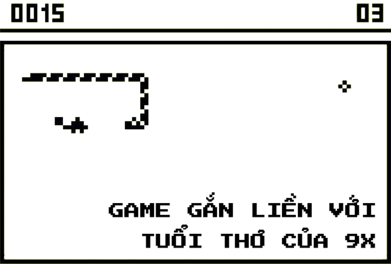
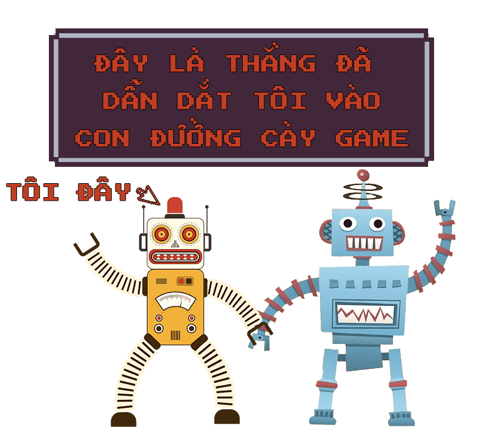
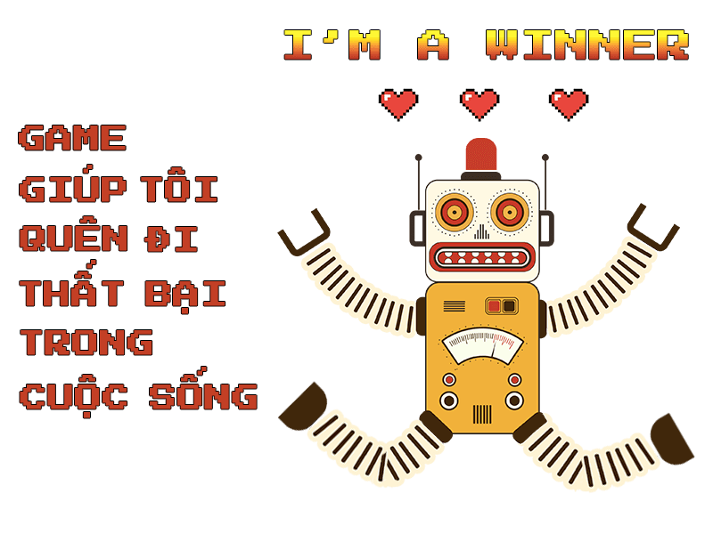

Nghiện game, vấn đề nhức nhối đã được nhắc tới từ lâu. Không chỉ là nỗi buồn của những vị phụ huynh có con mải chơi game, mà có khi còn là những ông chồng, bà vợ suốt ngày chỉ biết cắm mặt vào thế giới ảo mà quên đi thực tại hiện hữu xung quanh. Ngay cả tôi cũng vậy, tôi cũng là một kẻ nghiện game. Bạn có thể bắt gặp hình ảnh của mình ở đâu đó trong hồi ức của tôi.
Tôi là một 9x đời đầu, thế nên sự phát triển mạnh mẽ của thế giới game, đặc biệt là game di động, đã gắn liền với tuổi thơ của tôi. Từ cái ngày mà tôi mới học lớp 6, cũng là thời điểm mà điện thoại di động đã có kết nối GPRS.
Những trò chơi mà tôi chơi như là Bounce hay Rắn săn mồi huyền thoại trên chiếc điện thoại Nokia của bố tôi. Tôi cũng không thể nào nhớ rõ được đó là model nào của Nokia nữa, bởi vì thứ mà tôi quan tâm là chiếc điện thoại ấy có trò quả bóng hay con rắn hay không mà thôi.

Khi đó, tôi chưa hề có khái niệm nghiện game là gì cả, tôi cũng rất ít khi được chơi game. Bố tôi thường giấu điện thoại rất kỹ và còn cài cả mật khẩu nữa, nên vài tháng tôi mới có dịp gọi là chơi một tý cho... đỡ nhớ.
Tới năm lớp 7, bố tôi sắm cho tôi chiếc Nokia 1200, lần này tôi nhớ rất rõ tên của nó luôn, đơn giản vì mẫu điện thoại này đã quá nổi tiếng và phổ biến. Game trên máy thì có gì đâu, chỉ là đẩy bi, bắn bi hay là rắn săn mồi.
Và tôi lúc đó cũng chẳng có hứng thú gì chơi game trên cái điện thoại đen trắng đó cả. Rồi tình cờ tụi bạn tôi khoe điểm rắn săn mồi ai cao hơn. Tất nhiên, tôi nghe được điều đó và cũng muốn đứng TOP cao thủ rắn săn mồi.
Rồi hằng đêm, cứ mỗi khi học bài xong là tôi lại tranh thủ làm vài trận để nâng điểm kỷ lục của mình lên.
Bước ngoặt mới của cuộc đời tôi có lẽ là lúc chuyển trường mới vào năm lớp 8. Khi ấy, tôi được ngồi cạnh một người bạn mới và sau này trở thành người bạn thân của tôi, người đã dắt tôi đi vào cánh của của thế giới game di động.
Bạn tôi sở hữu một chiếc Sony Ericsson K830i và luôn luôn tự hào tuyên bố là mình đã từng chơi hết game trên Waptrick, game nào mới là tải về chơi liền, không chờ đợi. Còn tôi lúc đó chẳng khác một tên lính mới ngáo ngơ bên cạnh một game thủ lão làng.
Bạn tôi đã chỉ cho tôi bao nhiêu là thứ về game di động, như: tải game ở đâu, file jar hay jad, rồi kích thước màn hình,... đủ thứ trên đời.
Tôi đã chọn cho mình một trò chơi là Galaxy On Fire, tựa game bắn phi thuyền hay nhất thời bấy giờ. À, tất nhiên là tôi chơi trên máy của bạn tôi rồi.Gần một năm chúng tôi chơi cùng nhau, bạn tôi cũng phải thốt lên: "Cả trăm cái thiên hà mà mình cũng đi hết rồi à, còn tàu nào chưa mua nữa không nhỉ?".
Tôi cũng giật mình nhìn lại: "Ấy dà, chơi hết game rồi à, tải trò khác chơi thôi".

Và cậu bạn lại giới thiệu cho tôi trò Deep Submarine Odyssey. Đến khi chơi xong, tôi đã hoàn thành ước nguyện mà cậu bạn tôi chưa làm được, đó là mua cái tàu có giá 3M credit.
Đấy mới là tôi kể cho các bạn nghe chiến tích chơi game của mình thôi. Còn cách thức chơi mới là điều thú vị. Mặc dù tôi cũng chẳng có gì tự hào khi khoe điều này ra cả, nhưng tuổi học trò mà, quậy lắm.Những tiết học có phần nhàm chán hay giáo viên dễ dãi là lúc chiếc điện thoại trên tay tôi được ngang nhiên đặt ở vị trí tối thượng trên bàn học. Bởi hướng 12 giờ của tôi đã có vô số những lá chắn sẵn sàng che chở cho tôi mỗi khi chơi. Tôi vẫn thường phải nịnh chúng nó rằng: "Mày nhớ ngồi thẳng lưng đó, tao đang chơi game". Nhưng những lần mà cơn buồn ngủ của nó ập tới khiến nó gục xuống thì tôi mất đi hàng phòng vệ chắc chắn nhất, lúc phải tự vệ bằng cách nhanh tay đặt điện thoại xuống ngăn bàn.Để rồi sau đó, cầm điện thoại thấy chữ... "Mission Failed" có một cảm giác rất khó tả, mình thua cuộc chơi chỉ vì một tình huống đầy oan trái.
Rồi tôi "phát triển" thêm nhiều chiến thuật chơi game trốn giáo viên hơn như là đặt cuốn sách lên để che mặt, cúi gằm mặt xuống bàn, giấu điện thoại trong ống tay áo,... rất nhiều chiêu trò tôi không tài nào nhớ hết để kể nổi.

"Mục đích của tôi đó là: Chơi game cho đỡ chán, để giết thời gian và trở thành người thắng cuộc trong trò chơi đó". Chơi game đơn giản là một thứ giải trí, một thế giới mà mình có thể đi vào và giành chiến thắng, một thế giới để mà quên đi những thất bại ngoài đời thực.
Lúc tôi nhận ra mình trở thành một đứa nghiện game là lúc tôi phải thi cuối cấp. Ngay cả trong những giờ ôn thi, tôi vẫn còn lấy điện thoại ra chơi Nông trại vui vẻ hay Ninja School. Khoảng thời gian sau đó tôi bước vào cấp ba, cũng là lúc game di động bước lên một tầm cao mới với nền tảng Android và iOS. Định mệnh lại một lần nữa cho tôi ngồi cạnh một cao thủ võ lâm chuyển nghề sang xạ thủ đột kích (game di động). Tôi và người bạn này đã đồng hành cùng nhau chinh chiến biết bao nhiêu là game, từ thời Modern Combat, NOVA, PES 2012 và muôn vàn những game Android tôi không nhớ mà kể xuể.